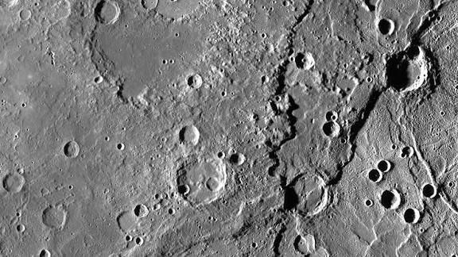
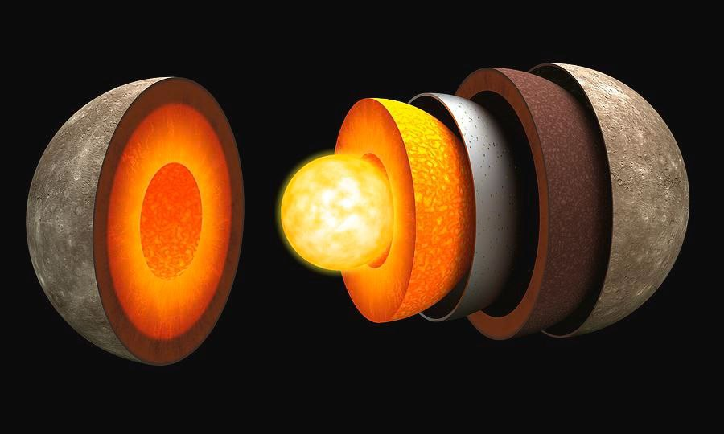

Mercury
Closest to the Sun; extreme hot & cold.

အရွယ်အစား
4,879 km
နေ့တာရှည်
1,408 h
တစ်နေ့ကြာချိန်
100–430 °C
လများ
0 Moon
Mercury သည် Solar System ထဲတွင် Sun နှင့် အနီးဆုံးရှိသော ဂြိုလ်ဖြစ်သည်။ Mercury သည် Solar System ထဲရှိ ဂြိုလ်များအနက် အရွယ်အစားအနည်းဆုံးဂြိုလ်လည်း ဖြစ်သည်။ အရွယ်အစားအားဖြင့် Earth ထက် အလွန်သေးငယ်သည်။ Mercury တွင် လေထု (atmosphere) မရှိသလောက် နည်းပါးသောကြောင့် အပူချိန်ကို ထိန်းသိမ်းနိုင်ခြင်း မရှိပါ။ ထို့ကြောင့် နေ့ဘက်တွင် အပူချိန် 430°C ခန့်ထိ ပူနိုင်ပြီး ညဘက်တွင် -180°C ခန့်ထိ အေးနိုင်သည်။ Mercury ၏ မျက်နှာပြင်သည် ကျောက်သားများနှင့် အပေါက်များ (craters) များစွာဖြင့် ဖုံးလွှမ်းထားပြီး လပုံစံနှင့် ဆင်တူသည်။ Mercury သည် Sun ကို တစ်ပတ်လည် လှည့်ပတ်ရန် 88 ရက်ခန့်သာ ကြာပြီး Solar System ထဲတွင် Sun ကို အမြန်ဆုံး လှည့်ပတ်သော ဂြိုလ်ဖြစ်သည်။ Mercury တွင် ဂြိုလ်တု (moon) မရှိသကဲ့သို့ ring များလည်း မရှိပါ။ ထို့ကြောင့် Mercury သည် ရိုးရှင်းသော ဂြိုလ်တစ်လုံးအဖြစ် သိပ္ပံပညာရှင်များ လေ့လာနေကြသည်။

Surface Details
Internal Structureထူးခြားချက်များ
Solar System အနီးဆုံးဂြိုလ် နေ့ဘက် အလွန်ပူ၊ ညဘက် အလွန်အေး (အပူချိန်အတက်အကျ 610°C)။ လေထု မရှိခြင်းကြောင့် မျက်နှာပြင်တွင် craters များစွာရှိသည်။